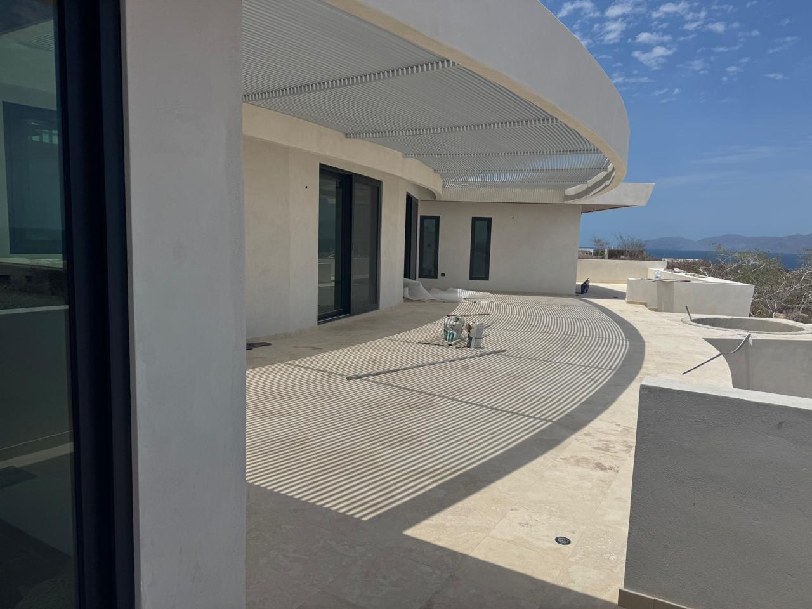

Proyectos residenciales
Planeación y desarrollo de viviendas con enfoque funcional y contemporáneo.
CONSTRUCTORA EN LA PAZ, BAJA CALIFORNIA SUR
Diseño, construcción y supervisión de proyectos residenciales, comerciales e industriales, con acompañamiento desde la idea hasta la ejecución.
CONSTRUCCIÓN EN LA PAZ, BCS
Cada proyecto necesita una solución distinta. Nuestro enfoque combina planeación, diseño, construcción y atención al detalle para crear espacios funcionales, seguros y con identidad. Trabajamos en La Paz y otros puntos de Baja California Sur.

SERVICIOS
Una presentación clara de las principales áreas en las que puede trabajar PROJECTCONS.
Planeación y desarrollo de viviendas con enfoque funcional y contemporáneo.
Espacios diseñados para operar, recibir clientes y fortalecer cada negocio.
Naves y bodegas pensadas para operación, almacenamiento y crecimiento.
Alternativas de vivienda eficientes y adaptadas a las necesidades de cada familia.
Seguimiento de avances, coordinación y control de las etapas del proyecto.
Propuestas personalizadas de acuerdo con terreno, presupuesto y objetivos.
CÓMO TRABAJAMOS
Cada obra es distinta. Primero entendemos el alcance y después definimos la ruta adecuada para desarrollarla.
Revisamos ubicación, necesidades, etapa actual, plazo y rango de inversión.
Identificamos los servicios y entregables necesarios para avanzar con claridad.
Organizamos etapas, prioridades y criterios técnicos antes de iniciar la obra.
Acompañamos el desarrollo y mantenemos comunicación durante el proceso.
PORTAFOLIO
Contamos con diferentes tipos de categorias.
¿POR QUÉ PROJECTCONS?
Atención a los detalles en cada etapa.
Soluciones adaptadas a cada proyecto.
Acompañamiento durante el desarrollo.
Relaciones de trabajo pensadas a largo plazo.
HABLEMOS
Cuéntanos qué necesitas y encontremos juntos la mejor solución.
PREGUNTAS FRECUENTES
Respuestas iniciales para ayudarte a preparar tu proyecto de construcción.
Atendemos proyectos residenciales, comerciales e industriales, además de naves, bodegas y soluciones de vivienda. El alcance se confirma después de revisar las necesidades de cada proyecto.
Sí. Podemos comenzar por conocer la idea, el terreno, las necesidades y el presupuesto para identificar la etapa de diseño y planeación que requiere el proyecto.
Completa el formulario con los datos básicos de tu obra. Se generará un mensaje organizado en WhatsApp para que el equipo pueda revisar tu solicitud y dar seguimiento.
La atención se centra en La Paz y Baja California Sur. La viabilidad en otra localidad depende del tipo, ubicación y alcance del proyecto.
Tipo y ubicación del proyecto, etapa actual, dimensiones aproximadas, rango de inversión y fecha estimada de inicio. Si aún no tienes todos los datos, podemos comenzar con lo disponible.
CONTACTO
Estamos listos para conocer tu idea, entender tus necesidades y ayudarte a convertirla en un proyecto real.